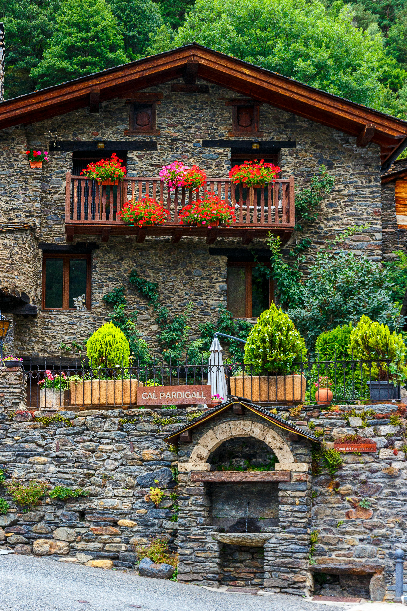
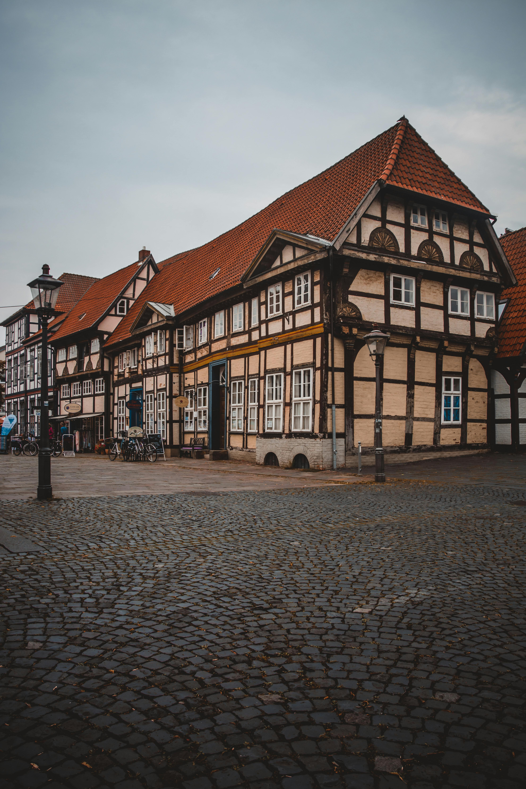

Cabañas Entre Sierras

Descubre el encanto de nuestra cabaña ubicada en el corazón del
bosque de Villa General Belgrano, Córdoba, Argentina. Esta acogedora
cabaña combina la tranquilidad de la naturaleza con todas las
comodidades modernas para una escapada inolvidable. Rodeada de
árboles autóctonos, senderos naturales y un entorno lleno de paz, es
el refugio perfecto para quienes buscan desconectar del mundo y
disfrutar del aire puro de las sierras cordobesas. La cabaña cuenta
con dos dormitorios acogedores, una cocina completamente equipada
con electrodomésticos modernos, un amplio living con chimenea de
leña y una hermosa terraza con parrilla para disfrutar de asados al
aire libre. Desde la terraza, se pueden contemplar vistas
espectaculares del bosque, las montañas y la fauna local. Ideal para
parejas, familias o grupos pequeños, es el lugar perfecto para
relajarse, explorar la naturaleza y sumergirse en la belleza
incomparable de Villa General Belgrano. Ven a vivir una experiencia
única y revitalizante en plena naturaleza. ¡Te esperamos con los
brazos abiertos!
Haus Edelweiss

Ubicada en la pintoresca localidad de Villa General Belgrano,
Córdoba, esta encantadora casa de estilo alemán tradicional refleja
la rica herencia cultural de la zona. Construida con materiales
nobles como piedra y madera, su diseño evoca la arquitectura típica
de los Alpes bávaros. La fachada se destaca por sus tejados a dos
aguas con pronunciada inclinación, detalles de madera tallada en
balcones y ventanas, y contraventanas coloridas que contrastan con
los tonos cálidos de la piedra. Al ingresar, te recibe un acogedor
ambiente con techos altos y vigas de madera a la vista, combinando
lo rústico con lo elegante. La chimenea central es el corazón de la
sala, perfecta para las frescas noches de montaña. Grandes
ventanales permiten que la luz natural bañe los espacios, mientras
ofrecen vistas panorámicas de los paisajes serranos. El jardín rodea
la casa, ofreciendo un espacio ideal para disfrutar del aire puro y
la tranquilidad del entorno. Esta casa es una auténtica joya que
fusiona tradición y naturaleza, brindando una experiencia única en
el corazón de las sierras cordobesas.
Residencia Zentral

Situada en pleno corazón de Villa General Belgrano, esta casa de dos
pisos combina el encanto de la arquitectura tradicional alemana con
las comodidades modernas. Su fachada, construida con ladrillo visto
y detalles en madera, refleja el estilo característico de la zona,
con un toque de elegancia urbana. Las ventanas amplias, adornadas
con contraventanas de madera, permiten una excelente entrada de luz
natural, mientras que el balcón del segundo piso ofrece una vista
privilegiada del centro y sus alrededores. Al ingresar, te recibe un
amplio salón de concepto abierto, ideal para la vida cotidiana y el
entretenimiento. El interior combina materiales cálidos como madera
y piedra con un diseño contemporáneo. La cocina, completamente
equipada, se integra de manera armoniosa con el comedor y la sala de
estar. El segundo piso alberga las habitaciones, con techos altos y
acabados en madera, creando un ambiente acogedor y relajante. A
pesar de estar en pleno centro, la casa cuenta con un pequeño patio
trasero, un espacio privado para disfrutar al aire libre. Perfecta
para quienes buscan vivir con estilo y comodidad en el corazón de
Villa General Belgrano.